QSVM说明文档¶
version：3.0
Author：李蕾
Update Date：20200519
1.SVM简介¶
机器学习算法可以简单的分为两类：非监督学习和监督学习，两者的主要区别在于前者事先不知道样本的标签，而后者事先已经知道样本的标签。同样，算法可以用于求解回归问题（输出的是连续数据类型），也可以用于求解分类问题（输出的数据类型是离散数据）。SVM属于用于分类问题的监督学习算法。当然SVM也可以用于回归问题。
如下所示，给出一组训练样本，根据样本去找最大间隔超平面
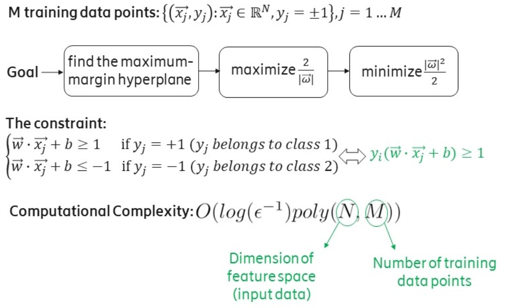SVM利用了少数的支持向量，通过一个分类超平面将数据分为两类，使这两类之间的间隔最大化，因此它也被称为最大间隔分类器。如图所示，超平面将实心圆和空心圆两类元素进行分类，使两类之间的距离达到最大，处于虚线上的点称为支持向量。
这里重点记录两个变量，法向量w 和 偏移量b，它们是决定这个超平面的参数。
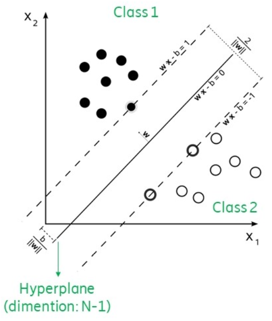一个支持向量机通过线性可分器实现。目标是寻找到一个超平面能够最好的区分两类数据，并且提供了一个决策边界供后续的分类任务。一个简单的例子是一个一维的线性数据，在点x的两边的数据分别属于类1和类2。在多维的情况下，一个超平面作为边界，在超平面一侧的数据属于一类，在超平面另一侧的数据属于另一类。图中给出的是一个二维的情况。对于线性不可分的情况，可以通过映射实现低维度到高维度的转换，使其变成线性可分。
SVM结构如下所示，其中最关键的两个问题分别是内积的计算和和找到最优的alpha。
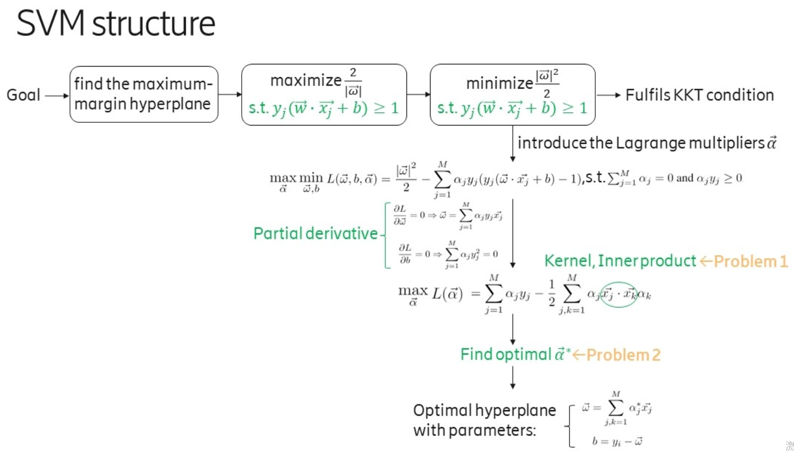2.QSVM解决的问题¶
虽然SVM只利用了少量的支持向量，但在计算上还是遍历了所有的样本和所有的特性，因此时间复杂度是**特征数量N**以及**样本数量M**的多项式级。当样本数量很大，比如达到TB(2^40^)和PB(2^50^)级，计算量是相当大的。
在大数据的背景下，量子算法能够提供一个指数级的加速，就像经典中处理1TB的数量，在量子中只要40个量子比特的数量级就可以了。
在2014年MIT和GOOGLE研究所联合发表在PRL的Quantum Support Vector Machine for Big Data Classification这篇文章中，介绍了基于HHL算法的QSVM的实现方法。如下图所示，通过两个量子方法解决了SVM中涉及的两个参数的计算复杂度问题。
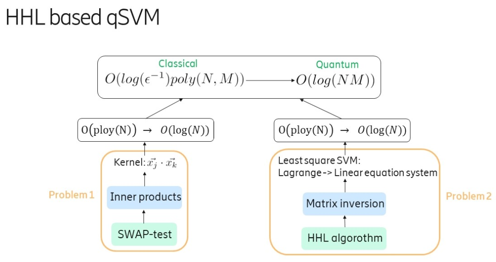问题1是内积的计算问题，通过SWAP-test实现，问题2是一个基于HHL算法的求解线性方程问题。
3.实现步骤¶
3.1内积的计算¶
在求解原始的SVM算法时，会将原始问题中对前面提到的参数w和b的求解，通过拉格朗日对偶及KKT条件转换为对拉格朗日乘子alpha的求解，最终通过带入alpha得到原始问题的解w和b。
在求解alpha时，会涉及到核函数，也就是样本之间的内积操作。经典算法复杂度是O(N)，量子的swap test方法可以达到O(logN)
量子线路如下所示
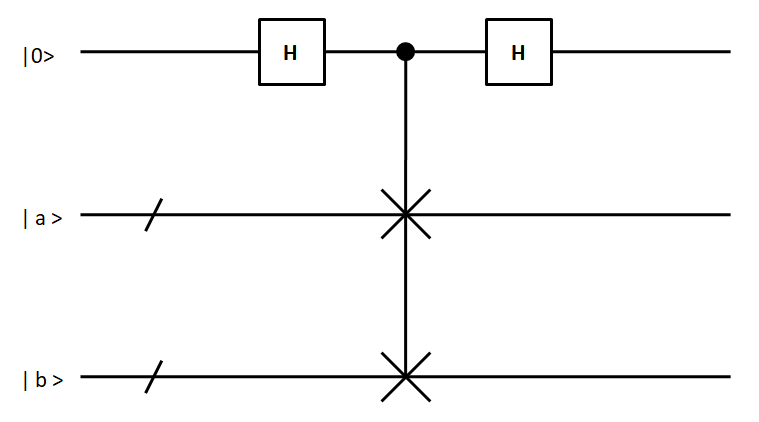其过程如下：
经过第一个H门后的态：\(\left|\psi_{1}\right\rangle=\frac{1}{\sqrt{2}}(|0, a, b\rangle+|1, a, b\rangle)\)
经过受控交换门后的态：\(\left|\psi_{2}\right\rangle=\frac{1}{\sqrt{2}}(|0, a, b\rangle+|1, b, a\rangle)\)
经过第二个H门后的态：\(\left|\psi_{3}\right\rangle=\frac{1}{2}|0\rangle(|a, b\rangle+|b, a\rangle)+\frac{1}{2}|1\rangle(|a, b\rangle-|b, a\rangle)\)
通过测量的结果，去反求出内积。
根据此线路使用python进行代码实现
import pyqpanda.pyQPanda as pq
from pyqpanda import *
import math
import numpy as np
class InitQMachine:
def __init__(self, quBitCnt, cBitCnt, machineType=pq.QMachineType.CPU):
self.m_machine = pq.init_quantum_machine(machineType)
self.m_qlist = self.m_machine.qAlloc_many(quBitCnt)
self.m_clist = self.m_machine.cAlloc_many(cBitCnt)
self.m_prog = pq.QProg()
def __del__(self):
pq.destroy_quantum_machine((self.m_machine))
init_machine = InitQMachine(3, 3)
qlist = init_machine.m_qlist
clist = init_machine.m_clist
machine = init_machine.m_machine
# 将输入的特征值进行归一化
def input_normalize(vector_x):
x = np.array(vector_x)
temp = np.sum(np.square(x), axis=1)
idx = np.argwhere(temp == 0)
if idx is not None:
temp[idx] = 0.0000001
return x/np.sqrt(temp)[:, None]
# 构造量子线路SWAP-test
def construct_qcircuit(q, c, a, b):
prog = pq.QProg()
circuit = CreateEmptyCircuit()
swap_circuit = pq.SWAP(q[1], q[2])
circuit.insert(pq.H(q[0]))\
.insert(initial_state(q[1], a))\
.insert(initial_state(q[2], b))\
.insert(swap_circuit.control([q[0]]))\
.insert(pq.H(q[0]))
# prog.insert(circuit).insert(Measure(q[0], c[0]))
prog.insert(circuit)
# print('draw_qprog:')
# pq.draw_qprog(prog)
result = prob_run_dict(prog, [q[0]], -1)
# result = run_with_configuration(prog, c, 10000)
# print(result)
p0 = result['0']
return p0
# 制备量子态，将特征向量通过制备线路变成量子态
def initial_state(q, x):
qcir = QCircuit()
theata = math.acos(x[0]**2-x[1]**2)
qcir.insert(RY(q, theata))
# print('draw_qprog:')
# pq.draw_qprog(qcir)
return qcir
# 计算内积
def cal_inner_product(x):
# 将x进行归一化
x = input_normalize(x)
# print('归一化后的x：', x)
# 定义列表用于存储测量概率幅的结果
p0_matrix = []
for a in x:
temp = []
for b in x:
p0 = construct_qcircuit(qlist, clist, a, b)
temp.append(p0)
p0_matrix.append(temp)
return p0_matrix
# 计算核矩阵
def get_kernel_matrix(x):
p0 = cal_inner_product(x)
p0 = np.array(p0)
# print('测量概率：')
# print(p0)
idx = np.argwhere(p0 < 0.5)
# print(idx)
if idx.any():
p0[idx[0], idx[1]] = 0.5 + 0.00000000001
# print('测量概率：')
# print(p0)
kernel_matrix = np.round(np.sqrt(p0*2 - 1), 5)
return kernel_matrix
if __name__ == '__main__':
x = [[14, 2], [100, 4], [9, 50], [52, 8], [8, 1], [1, 20]]
# x = [[4.01, 0.], [0., 1.4], [1.12, 1.93]]
k = get_kernel_matrix(x)
k = np.around(k, 4)
print('核矩阵：')
print(k)
norm_x = input_normalize(x)
norm_x = np.around(np.matmul(norm_x, norm_x.T), 4)
print("计算得到的内积：")
print(norm_x)
print(k == norm_x)
3.2基于HHL算法的求解b和alpha问题¶
求得内积后就是求解alpha，解alpha是一个二次规划的问题，文章《Quantum support vector machine for big data classification》并没有对原始SVM进行分析，而是对最小二乘支持向量机LSSVM的求解进行了分析。其是基于HHL算法进行实现的。
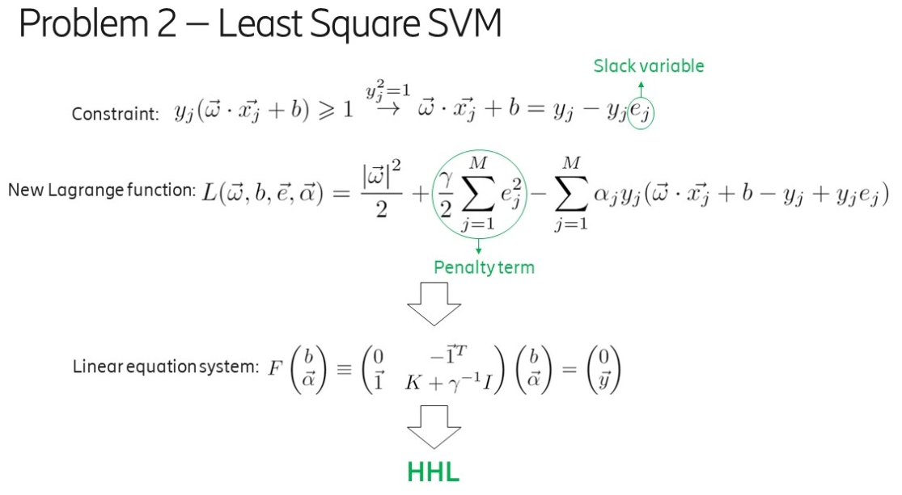LSSVM通过引入松弛变量e_j，将原来SVM的不等式约束转换为等式约束，大大方便了拉格朗日参数alpha的求解，将原来的QP（Quadratic Programming二次规划）问题转换为求解线性方程组的问题。量子算法在求解线性方程组时能够达到指数级的加速，因此可以用于对LSSVM的求解。
首先是HHL线路图如下所示：
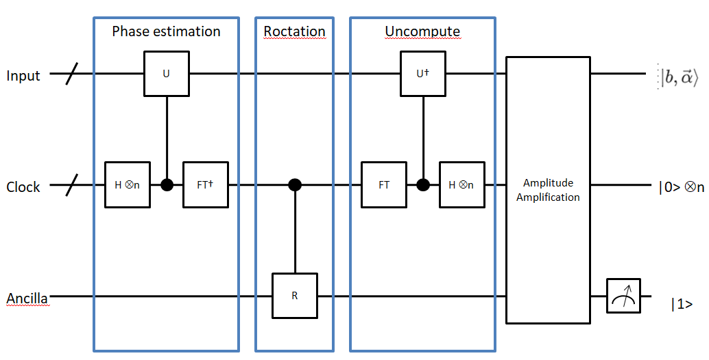第一步：
输入寄存器的量子态 \(|\tilde y\rangle = \sum\limits_{j=1}^{M+1}\langle u_j|\tilde y\rangle|u_j\rangle\) ，其中 \(|u_j\rangle\) 为 \(\hat F\) 的特征值 \(\lambda_j\) 对应的特征态，其中 \(\hat F = F/trF\) 且 \(||F||\leq 1\) ，\(\hat F = (J+K+\gamma^{-1}1)/trF\) ，其中 \(J=\pmatrix{0 & \vec 1^T \\ \vec 1 & 0}\) 。
首先实现任意矩阵的RY旋转角度编码，其代码如下：
"""
目标：实现任意矩阵的量子态振幅编码线路
"""
import numpy as np
import math
# 对数据进行增补
def _preprocessing(matrix):
matrix = np.array(matrix)
vector = matrix.flat
length = len(vector)
n = math.ceil(math.log(length, 2))
number_zero = 2 ** n - length
zeros = np.zeros(number_zero)
# 针对不够2的n次方个数的矩阵，进行补零
vector = np.append(vector, zeros)
return vector
# 对向量进行分组
def _queue_vector(vector):
result = []
queue = []
queue.append(vector)
while queue:
temp = queue.pop(0)
result.append(temp)
left = temp[:len(temp)//2]
right = temp[len(temp)//2:]
if len(left) > 1:
queue.append(left)
if len(right) > 1:
queue.append(right)
return result
# vector：预处理后的vector
def _get_theata(vector_list):
theata_list = []
temp = []
i = 0
for vector in vector_list:
length = len(vector)
left = vector[:length//2]
right = vector[length//2:]
left_sum = math.fsum(left)
right_sum = math.fsum(right)
if left_sum == 0 and right_sum == 0:
theata = 0
else:
theata = 2 * math.acos(left_sum/math.sqrt(left_sum**2 + right_sum**2))
temp.append(theata)
if len(temp) == 2**i:
theata_list.append(temp)
temp = []
i += 1
return theata_list
# 对矩阵进行振幅编码，得到结果，形如
'''
[
[2.33],
[2.40, 1.57],
[2.33, 1.87, 1.76, 1.01],
[2.21, 1.85, 1.75, 1.70, 1.67, 1.65, 1.64, 0.0]
]
'''
def encode_matrix(matrix):
x = _preprocessing(matrix)
q = _queue_vector(x)
# print(q)
theatas = _get_theata(q)
return theatas
if __name__ == '__main__':
x = np.arange(1, 16).reshape(3, 5)
theatas = encode_matrix(x)
print(theatas)
然后根据得到的RY旋转角度，构建量子线路，其代码如下：
# 振幅编码
def prepare_state(self, qlist, position, values):
# 准备RY旋转角度矩阵
theata_list = encode_matrix(values)
# 构建线路
cir = pq.QCircuit()
control_position = []
for i, theatas in enumerate(theata_list):
for j, theata in enumerate(theatas):
if i == 0:
cir.insert(RY(qlist[position+i], theata))
else:
gate = RY(qlist[position + i], theata)
# 对当前的索引进行编码
temp_cir = self.get_number_circuit(qlist, position, j, i)
# 插入索引
cir.insert(temp_cir)
cir.insert(gate.control(control_position))
# 还原
cir.insert(temp_cir)
control_position.append(qlist[position+i])
# print('draw_input_circuit:')
# pq.draw_qprog(cir)
return cir
第二步：
实现相位估计Phase Estimation
# 相位估计，qlist为量子寄存器，position表示构建线路的位置，number表示相位估计的clock寄存器的数量
def phase_estimation(self, qlist, position, number):
cir = QCircuit()
# clock量子比特位置
clock_position = position + self.number
for i in range(number):
cir.insert(H(qlist[clock_position + i]))
# 矩阵分解部分的子线路
for i in range(number):
# 矩阵酉化, 处理成一个一维的向量，作为matrix_decompose的参数
matrix = self.unitary(self.norm_F, math.pi/16*2**i)
# 矩阵分解线路
temp_cir = self.matrix_decompose(qlist, position, matrix)
cir.insert(temp_cir.control([qlist[clock_position+i]]))
# 量子傅里叶变换
for i in range(number):
cir.insert(H(qlist[clock_position+number-1-i]))
for j in range(i+1, number):
cir.insert(CR(qlist[clock_position+number-1-j], qlist[clock_position+number-1-i], 2*math.pi/2**(j-i+1)))
# print('draw_phase_estimation:')
# pq.draw_qprog(cir)
return cir
【1】模拟 \(e^{-i\hat{F}\Delta{t}}\) 对于算法第二步的输入，模拟 \(e^{-i\hat{F}\Delta{t}}\) 的核心是模拟 \(K∕trK\) 。
其中的难点是构造 \(e^{-i\hat{F}\Delta{t}} = e^{-i\Delta{t}1/trF}e^{-iJ\Delta{t}/trF}e^{-iK\Delta{t}/trF} + o(\Delta t^2)\) 。
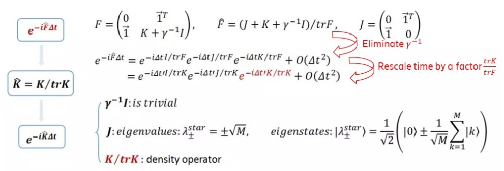【2】模拟 \(\hat K=K/trK\) ：这一步核心操作可以通过约化密度算子来实现，也就是通过对密度算子求偏迹运算得到。
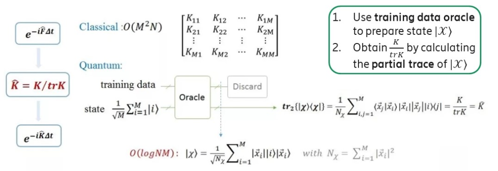【3】模拟 \(e^{-i\hat{K}\Delta{t}}\) ：如果K ̂是稀疏的，可以有效的模拟。在 \(\hat K\) 为非稀疏矩阵时，QPCA《Quatum principal component analysis》这篇论文中提供了一种对非稀疏对称或厄密矩阵的有效模拟方法。
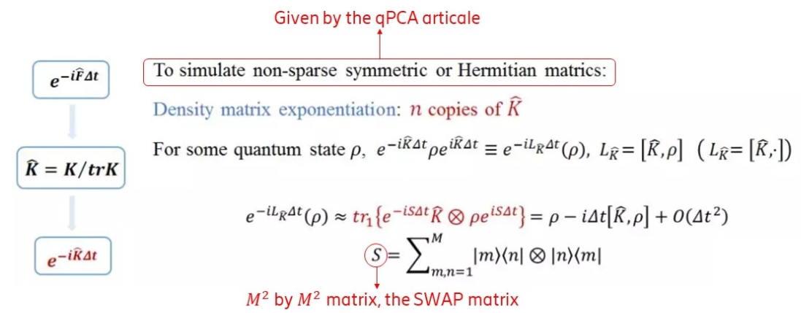通过以上几步的拆分最终可以实现 \(e^{-i\hat{F}\Delta{t}}\) 的有效模拟。
其公式他推导过程如下：
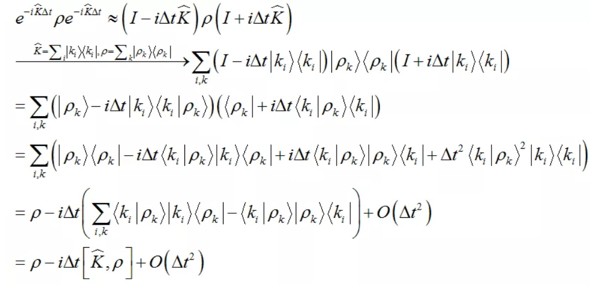 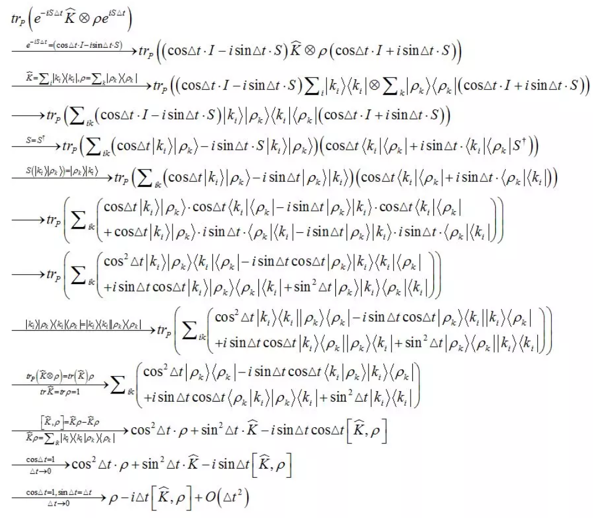该过程的是一个矩阵分解的操作，其实现过程已经有C++代码实现，调用其接口即可，下面给出python调用该接口实现分解功能的代码。
# 将矩阵进行分解
def matrix_decompose(self, qlist, position, matrix):
matrix = matrix.flatten().tolist()
# print(matrix)
# 获取分解矩阵的作用比特位置
qubit_list = []
for i in range(self.number):
qubit_list.append(qlist[position + i])
# 获取分解线路
cir = pq.matrix_decompose(qubit_list, matrix)
# print('矩阵分解：')
# pq.draw_qprog(cir)
return cir
第三步：
受控旋转control-rotation
# 受控旋转
def control_rotate(self, qlist, position, number):
cir = pq.QCircuit()
for i in range(number):
gate = RY(qlist[position+number], math.pi/2**i)
cir.insert(gate.control([qlist[position + i]]))
# print('draw_control_rotate:')
# pq.draw_qprog(cir)
return cir
第四步：
振幅放大，通过此将 \(|1\rangle\) 态的幅值放大，提高测量的成功率，目前该步暂时不用，直接去进行测量得到结果。
第五步：
测量最后一个量子位，如果结果是 \(|1\rangle\) ，则输入比特的输出就是需要的结果 \(|b,\vec\alpha\rangle = \frac{1}{\sqrt C}(b|0\rangle + \sum\limits_{k=1}^M\alpha_k|k\rangle)\)
综合以上所有过程，整体代码如下：
"""
HHL算法
"""
from pyqpanda import *
import pyqpanda.pyQPanda as pq
import numpy as np
import math
from scipy.linalg import expm
from swap_test import get_kernel_matrix
from encode_on_matrix import encode_matrix
class InitQMachine:
def __init__(self, quBitCnt, cBitCnt, machineType=pq.QMachineType.CPU):
self.m_machine = pq.init_quantum_machine(machineType)
self.m_machine.set_configure(35, 35)
self.m_qlist = self.m_machine.qAlloc_many(quBitCnt)
self.m_clist = self.m_machine.cAlloc_many(cBitCnt)
self.m_prog = pq.QProg()
def __del__(self):
pq.destroy_quantum_machine((self.m_machine))
class HHL:
def __init__(self, x, y):
self.x = x
self.y = y
# 核矩阵
self.k = self.get_kernel(x)
# 数据的数量
self.m = len(self.x)
# 输入线路数据的数量
self.M = self.m + 1
# F矩阵
self.F = self.get_F_matrix(self.k)
# 归一化后的 F矩阵
self.norm_F = self.normalize_matrix(self.F)
# 归一化F矩阵的特征值，和特征向量
self.eigenvalue, self.eigenvector = self.eigenvalues_of_matrix(self.norm_F)
# HHL输入量子比特数
self.number = math.ceil(math.log(self.M, 2))
# HHL输入参数值
self.input_y = np.insert(self.y, 0, values=0)
# 获取核矩阵
def get_kernel(self, x):
k = get_kernel_matrix(x)
return k
# 获取F矩阵
def get_F_matrix(self, k):
ones_col = np.ones(k.shape[0])
first_line = np.ones(k.shape[1] + 1)
first_line[0] = 0
F = np.column_stack((ones_col, k))
F = np.row_stack((first_line, F))
return F
# 矩阵的特征值,和特征向量
def eigenvalues_of_matrix(self, matrix):
eigenvalues, eigenvector = np.linalg.eig(matrix)
return eigenvalues, eigenvector
# 矩阵的迹
def trace_of_matrix(self, matrix):
matrix = np.array(matrix)
shape = matrix.shape
if shape[0] != shape[1]:
raise("matrix must be a square matrix")
return np.sum(matrix.diagonal())
# 矩阵的归一化
def normalize_matrix(self, matrix):
matrix = np.array(matrix)
trace = self.trace_of_matrix(matrix)
return matrix/trace
# 计算matrix转置共轭矩阵
def transposed_conjugate(self, target_matrix):
return np.conjugate(target_matrix.T)
# 定义判断矩阵是否是酉矩阵
def is_unitary(self, target_matrix):
trans_conj_of_matrix = self.transposed_conjugate(target_matrix)
product = np.around(np.dot(target_matrix, trans_conj_of_matrix), 5)
ones_matrix = np.identity(product.shape[0])
result = (product == ones_matrix).all()
return result
# 将matrix进行酉化
def unitary(self, matrix, t0):
matrix = np.array(matrix)
# print(matrix)
if self.is_unitary(matrix):
return matrix
return expm(-1j * matrix * t0)
# 根据当前number绘制子线路
def get_number_circuit(self, qlist, position, number, qubit_number):
cir = pq.QCircuit()
# 把当前item的数字变成二进制数字符串，并去除前面的0b字符
bin_str = bin(number).replace('0b', '')
# 对于不足量子比特数的前面用0进行补齐，并逆排序
bin_str = list((qubit_number - len(bin_str)) * '0' + bin_str)
for j, bit in enumerate(bin_str):
if bit == '0':
cir.insert(X(qlist[position + j]))
# print('画子线路')
# pq.draw_qprog(cir)
return cir
# 振幅编码
def prepare_state(self, qlist, position, values):
# 准备RY旋转角度矩阵
theata_list = encode_matrix(values)
# 构建线路
cir = pq.QCircuit()
control_position = []
for i, theatas in enumerate(theata_list):
for j, theata in enumerate(theatas):
if i == 0:
cir.insert(RY(qlist[position+i], theata))
else:
gate = RY(qlist[position + i], theata)
# 对当前的索引进行编码
temp_cir = self.get_number_circuit(qlist, position, j, i)
# 插入索引
cir.insert(temp_cir)
cir.insert(gate.control(control_position))
# 还原
cir.insert(temp_cir)
control_position.append(qlist[position+i])
# print('draw_input_circuit:')
# pq.draw_qprog(cir)
return cir
# 将矩阵进行分解
def matrix_decompose(self, qlist, position, matrix):
matrix = matrix.flatten().tolist()
# print(matrix)
# 获取分解矩阵的作用比特位置
qubit_list = []
for i in range(self.number):
qubit_list.append(qlist[position + i])
# 获取分解线路
cir = pq.matrix_decompose(qubit_list, matrix)
# print('矩阵分解：')
# pq.draw_qprog(cir)
return cir
# 相位估计，qlist为量子寄存器，position表示构建线路的位置，number表示相位估计的clock寄存器的数量
def phase_estimation(self, qlist, position, number):
cir = QCircuit()
# clock量子比特位置
clock_position = position + self.number
for i in range(number):
cir.insert(H(qlist[clock_position + i]))
# 矩阵分解部分的子线路
for i in range(number):
# 矩阵酉化, 处理成一个一维的向量，作为matrix_decompose的参数
matrix = self.unitary(self.norm_F, math.pi/16*2**i)
# 矩阵分解线路
temp_cir = self.matrix_decompose(qlist, position, matrix)
cir.insert(temp_cir.control([qlist[clock_position+i]]))
# 量子傅里叶变换
for i in range(number):
cir.insert(H(qlist[clock_position+number-1-i]))
for j in range(i+1, number):
cir.insert(CR(qlist[clock_position+number-1-j], qlist[clock_position+number-1-i], 2*math.pi/2**(j-i+1)))
# print('draw_phase_estimation:')
# pq.draw_qprog(cir)
return cir
# 受控旋转
def control_rotate(self, qlist, position, number):
cir = pq.QCircuit()
for i in range(number):
gate = RY(qlist[position+number], math.pi/2**i)
cir.insert(gate.control([qlist[position + i]]))
# print('draw_control_rotate:')
# pq.draw_qprog(cir)
return cir
# 构建 HHL 线路
def hhl_circuit(self, qlist, position, clock_number):
cir = pq.QCircuit()
pe_position = position
cr_position = position + self.number
# 相位估计线路
phase_estimation_cir = self.phase_estimation(qlist, pe_position, clock_number)
# 受控旋转线路
control_rotate_cir = self.control_rotate(qlist, cr_position, clock_number)
cir.insert(phase_estimation_cir) \
.insert(control_rotate_cir) \
.insert(phase_estimation_cir.dagger())
# print('draw_qprog:')
# pq.draw_qprog(cir)
return cir
# 带输入量子编码的 HHL线路, 并进行求解 |b, a>
def solve_hhl_cir(self, qlist, position, clock_number, input_values):
# 输入编码线路
input_cir = self.prepare_state(qlist, position, input_values)
# HHL线路
hhl_cir = self.hhl_circuit(qlist, position, clock_number)
prog = pq.QProg()
prog.insert(input_cir)
prog.insert(hhl_cir)
# print('draw_qprog:')
# pq.draw_qprog(prog)
directly_run(prog)
full_state = get_qstate()
return full_state
# 筛选出辅助比特测量结果是 1的态
def postselect(self, statevector, qubit_index, value):
mask = 1 << qubit_index
# print('mask:')
# print(mask)
# print('statevector:')
# print(statevector)
if value:
array_mask = np.arange(len(statevector)) & mask
else:
array_mask = not (np.arange(len(statevector)) & mask)
# print('array_mask:')
# print(array_mask)
def normalise(vec: np.ndarray):
from scipy.linalg import norm
return vec / norm(vec)
return normalise(statevector[array_mask != 0])
# 近似运算
def round_to_zero(self, vec, tol=2e-15):
vec.real[abs(vec.real) < tol] = 0.0
vec.imag[abs(vec.imag) < tol] = 0.0
return vec
# 计算结果
def get_result(self, qlist):
full_state = np.array(self.solve_hhl_cir(qlist, 0, self.M, self.input_y))
statevector = self.round_to_zero(self.postselect(full_state, 6, True), 1e-3)
solution = statevector[:self.M]
return solution.real
def run(self):
init_machine = InitQMachine(7, 7)
qlist = init_machine.m_qlist
clist = init_machine.m_clist
machine = init_machine.m_machine
print('HHL输入的向量：')
print(self.input_y)
print('核矩阵：')
print(self.k)
print('F矩阵：')
print(self.F)
print('归一化后的F矩阵：')
print(self.norm_F)
print('特征值：')
print(self.eigenvalue)
print('特征向量：')
print(self.eigenvector)
print('数据的数量：')
print(self.M)
# 根据数字进行二进制编码，绘制线路
# self.get_number_circuit(qlist, 0, 0, 2)
# 振幅编码
# l = [i for i in range(15)]
# self.prepare_state(qlist, 0, l)
# 矩阵酉化
# matrix = self.unitary(self.norm_F, math.pi/8)
# print('酉化后的矩阵：')
# print(matrix)
# 矩阵分解
# self.matrix_decompose(qlist, 0, matrix)
# 相位估计线路
# self.phase_estimation(qlist, 1, self.M)
# 受控旋转
# self.control_rotate(qlist, self.number, self.M)
# hhl线路
# self.hhl_circuit(qlist, 0, self.M)
# # 带输入的 HHL求解线路
# self.solve_hhl_cir(qlist, 0, self.M, self.input_y)
# 处理结果
print('结果：')
print(self.get_result(qlist))
def solve(x, y):
init_machine = InitQMachine(7, 7)
qlist = init_machine.m_qlist
hhl = HHL(x, y)
result = hhl.get_result(qlist)
return result
if __name__ == '__main__':
# 数据的准备
x = []
y = []
with open('./data3.txt', 'r') as f:
for line in f.readlines():
if line:
data_list = line.strip().split(' ')
x.append([float(data_list[0]), float(data_list[1])])
y.append(float(data_list[2]))
# 数据的整理
x = np.array(x)
y = np.array(y)
x = np.around(x, 2)
min_val = np.min(x, axis=0)
x[:, 0] = x[:, 0] - min_val[0]
x[:, 1] = x[:, 1] - min_val[1]
# hhl = HHL(x, y)
# hhl.run()
result = solve(x, y)
print(result)
经过以上五步即可实现HHL求解线性方程得到输出的量子态 \(|b, \vec\alpha\rangle\) ，通过将量子态送入到分类线路即可进行分类。下面分析分类的过程。
3.3分类¶
以上是训练的去得到量子态 \(|b, \vec\alpha\rangle\) 的过程，接下来是分类，整个分类的线路图如下所示：
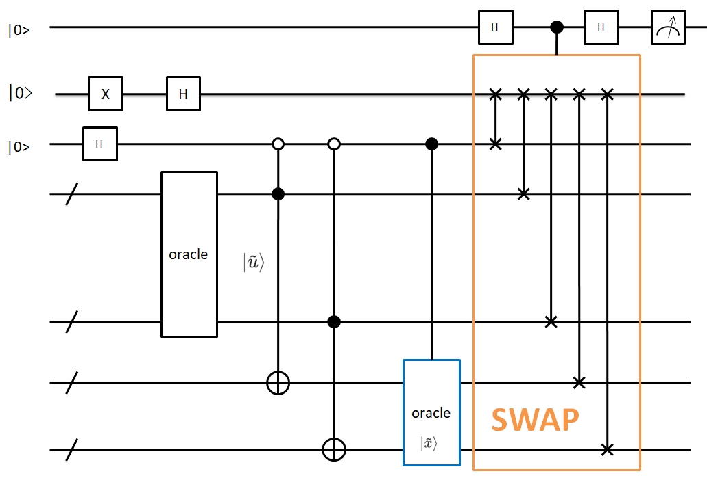** 第一步、构造training data oracle **
对于一个给定的新数据 \(|\vec x\rangle\) 进行分类，通过构造一个training data oracle实现下面的计算
其中 \(N_\tilde u=b^2+\sum\limits_{k=1}^M\alpha_k^2|\vec x_k|^2\) 。系数为 \(\{b,\alpha_1|\vec {x_1}|,\alpha_2|\vec {x_2}|,...,\alpha_M|\vec {x_M}|\}\)
另外，构造如下态：
其中 \(N_\tilde x=M|\vec x|^2+1\) 。系数为 \(\{1,|\vec {x_1}|,|\vec {x_2}|,...,|\vec {x_M}|\}\) ，其中 \(\vec {x_i} = \vec x\)
此处的量子线路构建如下图所示
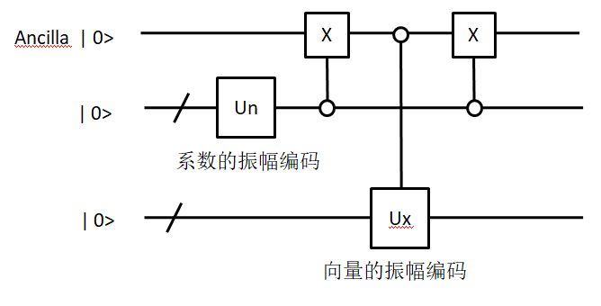对输入的系数和向量进行振幅编码
代码如下：
# 振幅编码
def prepare_state(self, qlist, position, values):
# 准备RY旋转角度矩阵
theata_list = encode_matrix(values)
# 构建线路
cir = pq.QCircuit()
control_position = []
for i, theatas in enumerate(theata_list):
for j, theata in enumerate(theatas):
if i == 0:
cir.insert(RY(qlist[position+i], theata))
else:
gate = RY(qlist[position + i], theata)
# 对当前的索引进行编码
temp_cir = self.get_number_circuit(qlist, position, j, i)
# 插入索引
cir.insert(temp_cir)
cir.insert(gate.control(control_position))
# 还原
cir.insert(temp_cir)
control_position.append(qlist[position+i])
# print('draw_input_circuit:')
# pq.draw_qprog(cir)
return cir
编码后，通过如下线路实现 \(|\psi\rangle\)
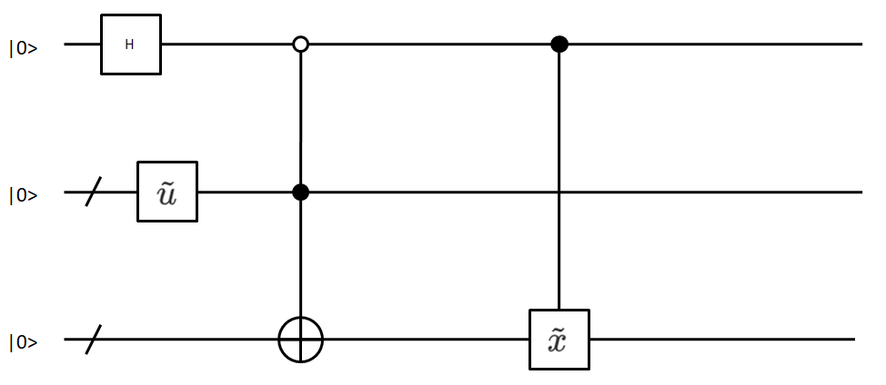代码如下：
# 构建线路实现 ψ = 1/sqrt(2)(|0>|u> + |1>|x>)
def construct_state_psi(self, qlist, position, u_coefficient, u_vector, x_coefficient, x_vector, oracle_qubits):
# u线路
u_cir_position = position + 1
u_cir = self.training_data_oracle(qlist, u_cir_position, u_coefficient, u_vector)
# x线路
x_cir_position = position + 1 + oracle_qubits
x_cir = self.training_data_oracle(qlist, x_cir_position, x_coefficient, x_vector)
# 受控CNOT门
cir_copy = pq.QCircuit()
for i in range(oracle_qubits):
cir_copy.insert(CNOT(qlist[u_cir_position+i], qlist[x_cir_position+i]))
# 插入受控 CNOT门
cir = pq.QCircuit()
# 在辅助比特上插入H门,X门
cir.insert(H(qlist[position]))
cir.insert(X(qlist[position]))
# 插入u线路
cir.insert(u_cir)
# 插入受控CNOT门
cir.insert(cir_copy.control([qlist[position]]))
# 控制下路x门还原
cir.insert(X(qlist[position]))
# 插入x线路
cir.insert(x_cir)
# print('Psi线路:')
# pq.draw_qprog(cir)
return cir
通过如下线路构建 \(|\phi\rangle=\frac{1}{\sqrt2}(|0\rangle-|1\rangle)\) 。
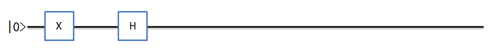代码如下：
# 构建线路实现 φ = 1/sqrt(2)(|0> - |1>)
def construct_state_phi(self, qlist, position):
cir = pq.QCircuit()
cir.insert(X(qlist[position]))
cir.insert(H(qlist[position]))
# print('Phi线路:')
# pq.draw_qprog(cir)
return cir
** 第二步、swap test实现 **
目标概率 \(P=|\langle\psi|\phi\rangle|^2=\frac{1}{2}(1-\langle\tilde u|\tilde x\rangle)\) 。
通过测量辅助比特0的概率 \(P(|0\rangle)=\frac{1}{2}+\frac{1}{2}|\langle \psi | \phi\rangle|^{2}\) 进行计算得到目标概率P
线路与内积计算线路相同，只是根据线路的数量不同进行一个扩展，代码如下：
# 通过测量辅助比特0态的概率去反推|<ψ|φ>|^2的概率,即 P(|0>) = 1/2 + 1/2(|<ψ|φ>|^2)
def swap_test_p(self, qlist, position, swap_qubits):
cir = pq.QCircuit()
cir.insert(H(qlist[position]))
phi_position = position+1
psi_position = phi_position+1
# 交换线路
swap_cir = pq.QCircuit()
for i in range(swap_qubits):
swap_cir.insert(SWAP(qlist[phi_position], qlist[psi_position+i]))
# 交换线路受控于辅助比特
cir.insert(swap_cir.control([qlist[position]]))
cir.insert(H(qlist[position]))
# print('SWAP-TEST线路:')
# pq.draw_qprog(cir)
return cir
** 第三部、分类 **
通过比较P与0.5的大小来划分输入数据的类别，小于0.5属于-1类，大于0.5属于+1类。